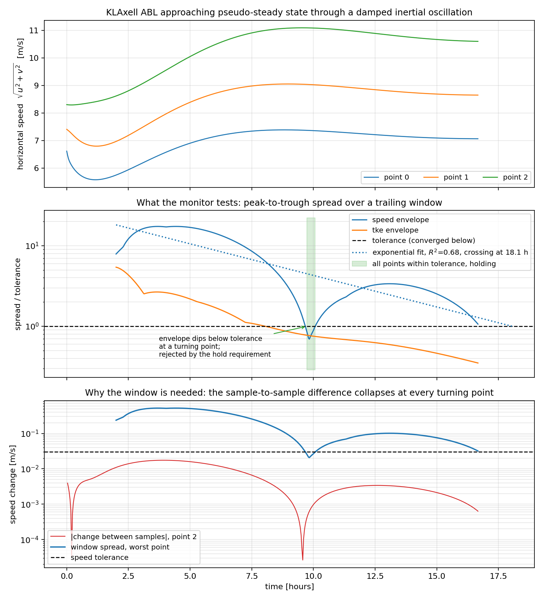

Section: RANSConvergence
This section controls the pseudo-steady convergence monitor. The monitor
samples horizontal wind speed and turbulent kinetic energy at a list of
user-supplied points, and once every point has stopped changing it asks the
time integrator to stop, which writes a final plotfile and checkpoint. It
removes the need to guess a time.stop_time that is long enough
to reach a steady state but not wastefully longer.
The prefix is the label set in incflo.post_processing. For example
incflo.post_processing = convergence. The inputs controlling output timing
that are shared with other post-processing types are listed in the
[post-processing section]; this monitor drives
its own sampling cadence and does not use them.
Restricted to the KLAxell model
The monitor aborts unless turbulence.model is KLAxell.
The criterion is a drift test on an instantaneous sampled value, which is only meaningful when that value approaches a limit. A RANS run marching to a pseudo-steady state has such a limit. A large eddy simulation does not: the velocity at a point stays turbulent indefinitely, so a drift test on the raw value never passes, and a drift test on a running mean passes trivially because a cumulative mean converges as \(1/N\) whether or not the flow is stationary. Applying the monitor to an LES would report a convergence the solution does not have, so it is refused rather than offered with a warning.
How convergence is measured
At each sample the monitor interpolates velocity and tke at every monitor
point and stores them. Over a trailing window of width
convergence.window it then measures the peak-to-trough spread of
horizontal wind speed \(\sqrt{u^2+v^2}\) and of tke. A point has
converged when both spreads are below tolerance, and the run stops when every
point has converged.
The spread over a window is used rather than a difference between successive samples because an atmospheric boundary layer under Coriolis and geostrophic forcing does not decay monotonically to steady state. It spirals in through a damped inertial oscillation of period \(2\pi/f\), which for \(f = 10^{-4}\,\mathrm{s^{-1}}\) is about 17.5 hours. A difference between successive samples vanishes at every turning point of that oscillation, so a monitor built on it would report convergence at the first peak, hours before the oscillation has actually decayed. A window still contains the swing on both sides of a turning point and is not fooled.
A window shrinks the turning-point problem but does not remove it. Near a turning point the signal is locally quadratic, so the spread measured over a window of width \(W\) falls to roughly \(W/T\) of its typical value, where \(T\) is the oscillation period. On a one-hour window with a 17.5 hour inertial period, that is a dip of more than an order of magnitude: in a test case the speed envelope peaked at 0.52 m/s and dipped to 0.022 m/s at a turning point, while the flow was still far from steady.
The remedy is convergence.hold_time. The dip lasts on the order
of one window, so requiring the criterion to hold continuously for longer than
that means a turning point cannot stop the run whatever the window and
tolerance are. The default of two windows is measured against that dip and
should not be lowered without a reason.
Three consequences for choosing inputs:
convergence.windowshould be a meaningful fraction of the inertial period, one to two hours for a mid-latitude or polar case. Longer windows make the turning-point dip shallower.convergence.hold_timeguards the dip that the window leaves behind. Leave it at the default unless you have measured the dip in your own configuration.convergence.sample_interval_timeshould be generous. Sampling every step buys no information, because the solution cannot move meaningfully in one timestep.
The vertical velocity is deliberately excluded from the speed. In a converging boundary layer it is small and comparatively noisy, so including it adds jitter to the envelope and delays the stop without making the test more informative.
Every point is tested independently and all points must pass. The metric is never averaged across points, because a point drifting up and a point drifting down would cancel in the mean and the aggregate would pass while neither point had converged.
Choosing tolerances
Each quantity takes an absolute and a relative tolerance, and the test uses whichever is larger:
A single absolute tolerance does not work for tke, which spans orders of
magnitude between the surface layer and the region above the boundary-layer
top. A single relative tolerance fails at the other end, becoming
unsatisfiable as tke approaches zero aloft. The combined form behaves as
an absolute floor where the quantity is small and as a relative test where it
is large.
Both absolute tolerances must be greater than zero and neither relative tolerance may be negative; the monitor refuses to start otherwise.
Start by running with convergence.stop_on_convergence set to
false on a case whose convergence you already trust. The monitor then reports
the spreads at each check without ever stopping the run, which is the cheapest
way to see the noise floor of your configuration and pick tolerances that are
neither unreachable nor met by accident.
time.max_step and time.stop_time remain in force
as backstops. A tolerance set below the noise floor of the run will simply
never trigger.
Estimated time to convergence
When the envelope is decaying roughly exponentially, the monitor fits \(s(t) = A e^{-rt}\) by least squares to the recent history of the worst normalized spread and extrapolates to the point where it would reach tolerance. The result is printed as an estimated time to convergence, which is useful for deciding whether a queued job has enough wall time left to finish.
The estimate is a diagnostic and never a stopping criterion: the run stops
only on measured spreads. Extrapolating an exponential fit to a threshold is
precisely where such a fit is least reliable, so the estimate is suppressed
unless the fit is good, controlled by convergence.eta_min_rsq.
It is also suppressed when the envelope is not decaying, which is the honest
report when a run has stalled on a noise floor rather than a confident
prediction that will never come true, when fewer than
convergence.eta_min_samples full windows have been recorded,
when any recorded spread is exactly zero, and when the fit claims tolerance
should already have been reached while the measured spread says otherwise.
Only full windows enter the fit, and only the trailing
convergence.eta_fit_window of them, so that neither the
window-filling phase nor the early transient drags the fitted rate.
Monitor points
Points are read from a text file whose first line is the number of points,
followed by one x y z triple per line. This is the same format used by
ProbeSampler.
The monitor prints the coordinates of every point it is monitoring at startup. Check that list: a point outside the domain is silently moved inside it by the underlying probe sampler, with a warning, so the printed coordinates are the ones actually being used.
If a terrain height field is present, points below the terrain surface are a fatal error. Such a point is held near zero by the drag forcing and converges immediately, and because every point must pass the test it would weaken the criterion without ever failing.
Restarts
The window is not carried across a restart. After a restart the monitor refills the window from scratch and then serves the hold again before it can declare convergence, which costs one window plus the hold of extra runtime. This is deliberate: a restart may change resolution, forcing or terrain, and carrying stale samples across it would let a run stop on evidence gathered under different physics.
Example run
{kind=link}

2 The monitor on a coarse KLAxell boundary layer, run in report-only mode so the history continues past the point where the run would have stopped.
The case is a 16 x 16 x 32 KLAxell boundary layer on a 2048 x 2048 x 1024 m
domain with a fixed 5 s timestep, run to 60000 s, with Coriolis forcing giving
\(f = 10^{-4}\,\mathrm{s^{-1}}\) and an inertial period of 17.5 hours.
The monitor used start_time = 3600, sample_interval_time = 120,
window = 3600, velocity_abs_tol = 0.03, tke_abs_tol = 0.005 and the
default hold_time of 7200 s. The mesh is far too coarse for a production
answer; it is sized to make the behavior of the criterion visible.
The top panel shows the three monitor points turning over as the inertial oscillation carries the flow past its first peak; the flow has plainly not settled by the end of the run.
The middle panel is what the monitor tests, the spread divided by its own
tolerance, so convergence is the line at one. The speed envelope falls through
that line near 9.7 hours and then climbs back to three and a half times
tolerance. That dip is a turning point of the oscillation, and without
convergence.hold_time the run would have stopped there. The
shaded band is the monitor passing tolerance and holding: the hold reached
1320 s of the required 7200 s before the spread rose back through tolerance
and reset it. The dotted line is the exponential fit, extrapolating a crossing
at 18.1 hours with an \(R^2\) of 0.68, just above the default
convergence.eta_min_rsq.
The bottom panel shows why a window is needed at all. The change in speed between successive samples at the worst point collapses to about \(3 \times 10^{-5}\) m/s at the turning point, a thousand times below tolerance, while the window spread at the same instant is \(2 \times 10^{-2}\) m/s.
The figure can be regenerated for any run with tools/plot_rans_convergence.py,
which needs an ASCII Sampling post-processor on the same points alongside
the monitor.
Limitations
The monitor only decides when to stop. It does not change the time integration or accelerate convergence in any way.
There is no domain-wide residual. FieldNorms computes global norms, but in a boundary layer setup those are dominated by the Rayleigh damping layer and any sponge regions, which converge to an imposed target rather than to a solution. Monitor points answer the question that usually matters, whether the layer of interest is steady.
Wind direction is not tested. The inertial oscillation shows up more strongly in direction than in speed, so a speed criterion can pass while the wind is still turning. Choose tolerances and the hold with that in mind.
One tolerance pair per quantity applies to every point.
The window is not saved in the checkpoint file; see Restarts.
Inputs
- convergence.type
type: String, mandatory
To use the convergence monitor specify with keyword
RANSConvergence
- convergence.probe_location_file
type: String, optional, default =
probe_locations.txtPath to the file listing the monitor points.
- convergence.start_time
type: Real, mandatory
Simulation time at which monitoring begins. There is no default and a value of zero is rejected. A KLAxell run is driven toward its target by forcing terms that ramp in over time, such as
DragForcing.bc_forcing_time_factorand the mesoscale sponge. Convergence measured before those ramps have finished says only that the solution is tracking a moving target, so this delay must be chosen deliberately rather than defaulted.
- convergence.sample_interval_time
type: Real, mandatory
Simulation time in seconds between samples. Specified in physical time rather than timesteps because these runs use adaptive timestepping.
- convergence.window
type: Real, mandatory
Width in seconds of the trailing window over which the peak-to-trough spread is measured. Must be larger than the sample interval.
- convergence.velocity_abs_tol
type: Real, optional, default = 0.01
Absolute tolerance in m/s on the horizontal wind speed spread. Must be greater than zero: it is the floor that keeps the test meaningful where the speed is small, every check divides a spread by the resulting tolerance, and a value of zero could never be met in any case.
- convergence.velocity_rel_tol
type: Real, optional, default = 0.001
Relative tolerance on the horizontal wind speed spread, applied to the window mean of the speed at that point.
- convergence.tke_abs_tol
type: Real, optional, default = 0.001
Absolute tolerance in m^2/s^2 on the turbulent kinetic energy spread. Must be greater than zero, for the same reason as the velocity floor above.
- convergence.tke_rel_tol
type: Real, optional, default = 0.01
Relative tolerance on the turbulent kinetic energy spread, applied to the window mean of
tkeat that point.
- convergence.hold_time
type: Real, optional, default = twice
windowHow long in seconds every point must stay within tolerance continuously before the run is stopped. A single passing check is not enough, because the envelope dips at every turning point of the inertial oscillation. The elapsed hold is reported in the output file, and it resets to zero as soon as any point falls back outside tolerance.
- convergence.min_samples
type: Integer, optional, default = 4
Fewest samples that must be present in the window before convergence may be declared. Must be at least 2 for a spread to be meaningful.
- convergence.stop_on_convergence
type: Boolean, optional, default = true
When true, the run stops once every point has converged, and a plotfile and checkpoint are written unconditionally. When false the monitor reports at each check but never stops the run.
- convergence.report_eta
type: Boolean, optional, default = true
Report an estimated time to convergence from an exponential fit to the envelope history.
- convergence.eta_fit_window
type: Real, optional, default = 10 times
windowTrailing span in seconds of envelope history used for the exponential fit. Using the whole history instead would let the early transient, before the forcing ramps have settled, contaminate the fitted decay rate.
- convergence.eta_min_samples
type: Integer, optional, default = 5
Fewest envelope samples that will be fitted.
- convergence.eta_min_rsq
type: Real, optional, default = 0.5
Smallest coefficient of determination, computed in log space, for which the estimated time to convergence is reported. A fit below this is discarded rather than quoted.
Output
A text file named after the label is written to the post-processing directory, with one line per check recording the time, how many samples the window holds and whether it is full, how many points have converged, the worst point for each quantity together with its spread and the tolerance it was compared against, how long the criterion has held, and the estimated time to convergence. The same information is printed to the log.
The columns, in order, are time, samples_in_window, window_full,
num_converged, num_points, worst_velocity_point,
worst_velocity_spread, worst_velocity_tol, worst_tke_point,
worst_tke_spread, worst_tke_tol, hold_elapsed and
estimated_time_to_convergence, the last being -1 when no estimate is
reported.
Read window_full before num_converged. While the window is still
filling it holds only a couple of samples, whose spread is small whatever the
flow is doing, so early rows routinely show every point converged without
meaning it.
The worst-offender columns are the ones to read when a run does not converge: they distinguish a flow that is genuinely still evolving from a single badly placed point holding up an otherwise converged field, and from a tolerance that is simply too tight.
Example
incflo.post_processing = convergence
convergence.type = RANSConvergence
convergence.probe_location_file = monitor_points.txt
convergence.start_time = 7200.0
convergence.sample_interval_time = 60.0
convergence.window = 3600.0
convergence.velocity_abs_tol = 0.01
convergence.velocity_rel_tol = 0.001
convergence.tke_abs_tol = 0.001
convergence.tke_rel_tol = 0.01
convergence.stop_on_convergence = true